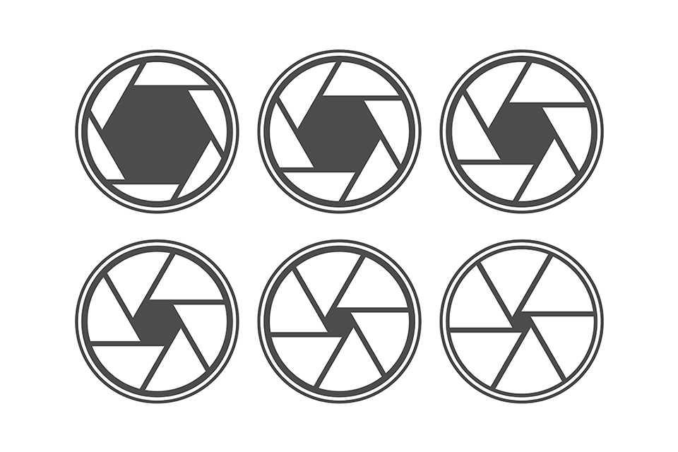

Esse diâmetro é um dos fatores que define a quantidade de luz que
entrará na câmera, até o sensor. Quanto maior for a abertura, mais
luminosa é a objetiva (mais apta para locais com pouca luz).
A determinação da abertura do diafragma é feita por meio de
uma nomenclatura própria, denominada ESCALA DE NÚMEROS F/STOP.
Quanto maior for o número, menor será a quantidade de luz a ser transmitida pela objetiva,
e menos luminosa a imagem se formará. Esta escala se apresenta da seguinte forma:
f/1, f/1.4, f/2, f/2.8, f/4, f/5.6, f/8, f/11, f/16, f/22, f/32, f/64.
Nessa escala, reduz-se sempre à metade a luz do número anterior, ou seja,
a abertura f/2 é a metade em relação à f/1.4, mas representa o dobro
em relação à f/2.8. À medida que se fecha o diafragma, a sua área é
reduzida pela metade, e à medida que se abre, esta área é dobrada.
O diâmetro do diafragma também determina a profundidade de campo, que é a
quantidade de planos focados em uma fotografia. Veja mais sobre o que é profundidade de campo.